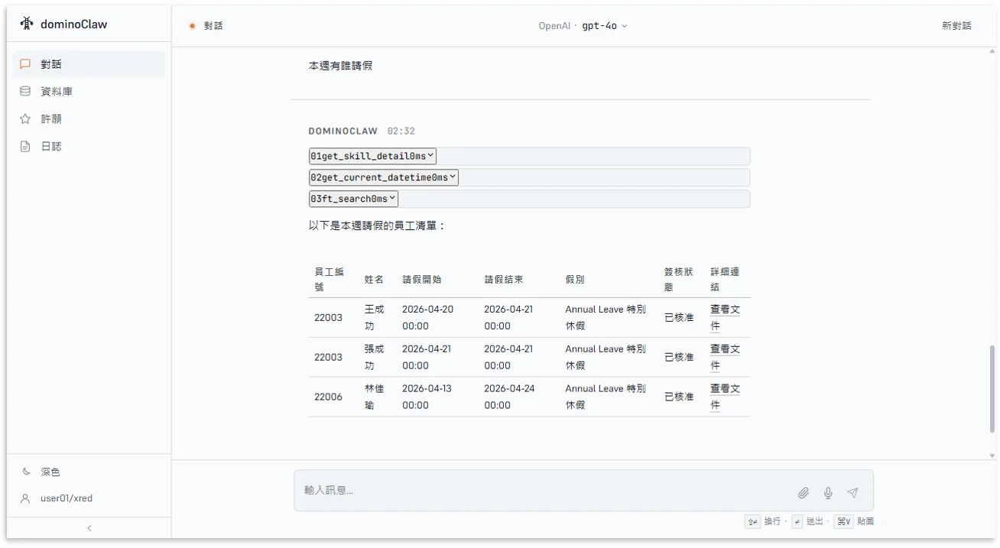
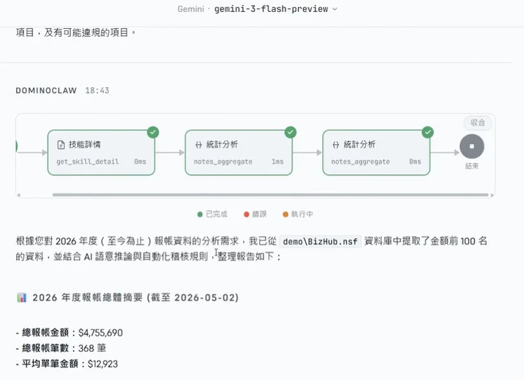
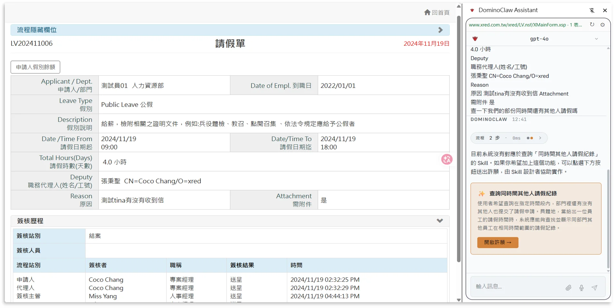

DominoClaw — Domino 專屬的 AI Agent
用說的，一句話就能操作 Domino。不用記指令、不用切畫面，用平常講話的方式完成查詢與作業。
看看它能幫員工做什麼
這些原本要打開 Notes、翻好幾個畫面才完成的事，現在問一句就好。
對話介面示意
員工只要問「本週有誰請假」，AI 立刻回傳結構化表格，直接附上「查看文件」連結。

mail「最近一週有什麼信？」
不用打開 Notes 一封封翻——AI 主動整理本週信件清單，重要訊息一眼看到。
send「寄封信給 Coco，說進度沒問題」
自動找到收件人、自動寄出，並回傳查看連結讓您確認，省去切換郵件介面的時間。
savings「維護合約預算還剩多少？」
AI 直接從 Domino 資料庫中撈出數字並整理，不用再請同事幫忙查找。
event_busy「本週有誰請假？」
主管最常問的問題，AI 秒回表格：人員、假別、狀態一目瞭然。
為什麼 DominoClaw 又準又穩
我們不是把 AI 套在表面，而是在底層重新設計它的「思考方式」，讓它在企業環境裡真的能用、能信任。
執行紀錄追溯
每一次回答，AI 用了哪些技能、花了多少毫秒，全程可視化呈現，企業稽核有依據。

psychology說什麼就懂什麼
AI 不靠死板的關鍵字比對，而是理解您真正的意思，再選擇對應的執行方式。
account_tree複雜任務自動分工
需要跨多個步驟的任務，AI 會自動規劃並逐步完成，不是寫死的流程，而是即時思考的工作鏈。
memory越聊越穩，不會變笨
內建智慧記憶機制，最近對話完整保留、舊資訊適度精簡——速度與品質長時間都穩定。
visibility每一步都看得到
每次回答都附帶執行紀錄——用了哪個能力、查了哪個資料、花了多少時間，全程可追溯。
讓 AI 安全地在企業裡工作
AI 帶來的不只是效率，也帶來新的安全議題。DominoClaw 從一開始就把企業安控放在第一位。
admin_panel_settings存取邊界由 IT 決定
AI 能碰哪些資料庫，由管理員集中設定。改一個設定就能即時調整權限，不用動程式碼。
groups不同角色看到不同功能
功能分為公司通用、部門專屬、個人自訂三層——各自獨立，員工不會誤觸不屬於自己的功能。
即將推出：Chrome 側邊欄模式
開著 Domino 表單，旁邊就能跟 AI 對話。不用切畫面、不用複製貼上，工作流程更順暢。
